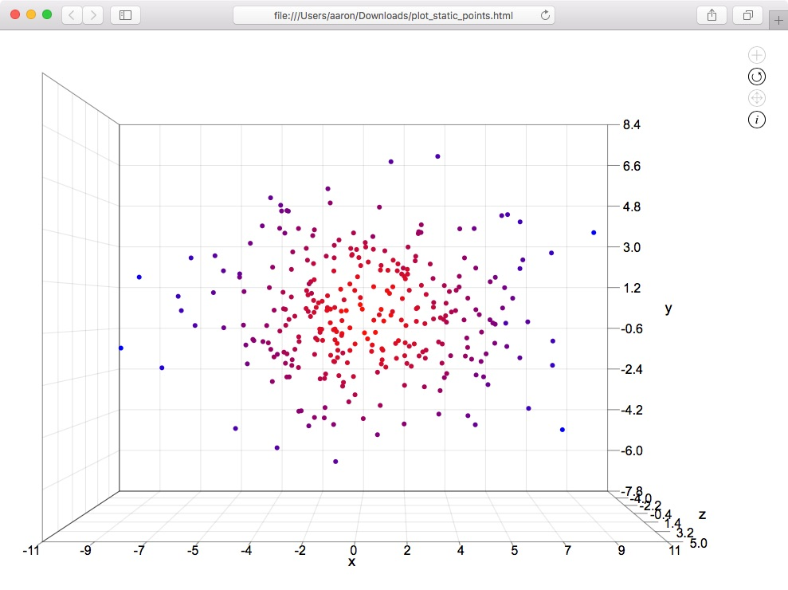

Plotting 3D points
This tutorial will show you how to plot static and animated 3D points using the R package svgViewR. The uninterrupted block of code can be found at the end of this tutorial.
Preliminary steps
Make sure that you have R installed on your system (you can find R installation instructions here). You will also need to install the latest version of the R package svgViewR on CRAN.
# Install the svgViewR package (if not already installed) install.packages('svgViewR', dependencies=TRUE)
Creating an interactive visualization of static points
Start by loading the svgViewR package into the current R workspace.
# Load the svgViewR package library(svgViewR)
Create a distribution of 3D points using the rnorm() function.
# Set number of points to draw n <- 300 # Create a cloud of normally distributed 3D points points3d <- cbind(rnorm(n, sd=3), rnorm(n, sd=2), rnorm(n, sd=1))
Open a connection to a new svgViewR .html file. All of the shapes that you draw will be written to this .html file. At the end you'll be able to open this file in a web browser and view the shapes as an interactive graphic.
# Open a connection to .html file svg.new(file='plot_static_points.html')
To add some color, set each point's color on a color gradient as a function of its distance from the point cloud centroid.
# Get distance of points from the center of point cloud pdist <- sqrt(rowSums((points3d - matrix(colMeans(points3d), n, 3, byrow=TRUE))^2)) # Set color gradient between red and blue colfunc <- colorRampPalette(c('red', 'blue')) # Set desired number of colors along gradient col_grad <- colfunc(50) # Scale distances to indices and find corresponding color along gradient col <- col_grad[(length(col_grad)-1)*(pdist - min(pdist)) / diff(range(pdist))+1]
Add these points to the html file.
# Add points to file svg.points(points3d, col=col)
Optionally, add a frame around the points. This function outputs the limits of the drawn frame. To surpress this output from being written to the console send the function's output to svg_frame.
# Add coordinate axis planes around the points svg_frame <- svg.frame(points3d)
Close the connection to the .html file. This adds some closing tags that are needed for the visualization to work properly.
# Close the file connection svg.close()
You can now open the resulting .html file. It should look something like the image below. Or check out the resulting .html file here.
Note that unlike the base R plotting functions you are not required to specify limits for the plot region prior to plotting shapes. When you open the .html file the javascript code inside the .html file will automatically determine the necessary viewing window dimensions so that all the shapes are visible.
To rotate the graphic click and drag the cursor while holding down the 'r' key or click on the circle arrow icon in the top right corner and then click and drag the cursor. To move the graphic click and drag the cursor or click on the intersecting arrows icon in the top right and click and drag the cursor. To zoom scroll in and out. To return to the initial orientation of the graphic (or to see changes if you re-write the file) refresh the browser.
Creating an interactive visualization of animated points
These 3D points look pretty cool but they would look even cooler if they moved! svgViewR interprets matrices as static shapes and arrays as animated shapes. So to create an animated point cloud all you have to do is specify an array of points. For this example we'll convert the point matrix we made in the previous example into an array.
Start by specifying the number of iterations you'd like in the animation.
# Set number of iterations n_iter <- 100
Create an 3D point array, filled initially with the previous matrix points. The third dimension of this array represents each of the animation states.
# Create animated point array points3da <- array(points3d, dim=c(dim(points3d), n_iter))
To create an easy animation we'll simply multiple the xyz-coordinates at each iteration by the square of the iteration, starting with 0. This will cause the points to expand at an accelerating rate from the origin. Scaling the coordinates down by 0.001 keeps the axis labels between 0 and 100.
# Expand points from origin for(iter in 0:(n_iter-1)){ points3da[, , iter] <- points3da[, , iter] * 0.001 * iter^2 }
You're ready to plot the animated points. These can be plotted in the exact same way as the static points, simply replace points3d with points3da.
# Open a connection to .html file svg.new(file='plot_animated_points.html') # Add points to file svg.points(points3da, col=col) # Add coordinate axis planes around the points svg_frame <- svg.frame(points3da) # Close the file connection svg.close()
Open 'plot_animated_points.html' and you should now have an interactive animation like here or like in the video below.
Uninterrupted code
# Load the svgViewR package library(svgViewR) # Set number of points to draw n <- 300 # Create a cloud of normally distributed 3D points points3d <- cbind(rnorm(n, sd=3), rnorm(n, sd=2), rnorm(n, sd=1)) # Open a connection to .html file svg.new(file='plot_static_points.html') # Get distance of points from the center of point cloud pdist <- sqrt(rowSums((points3d - matrix(colMeans(points3d), n, 3, byrow=TRUE))^2)) # Set color gradient between red and blue colfunc <- colorRampPalette(c('red', 'blue')) # Set desired number of colors along gradient col_grad <- colfunc(50) # Scale distances to indices and find corresponding color along gradient col <- col_grad[(length(col_grad)-1)*(pdist - min(pdist)) / diff(range(pdist))+1] # Add points to file svg.points(points3d, col=col) # Add coordinate axis planes around the points svg_frame <- svg.frame(points3d) # Close the file connection svg.close() # Set number of iterations n_iter <- 100 # Create animated point array points3da <- array(points3d, dim=c(dim(points3d), n_iter)) # Expand points from origin for(iter in 0:(n_iter-1)){ points3da[, , iter] <- points3da[, , iter] * 0.001 * iter^2 } # Open a connection to .html file svg.new(file='plot_animated_points.html') # Add points to file svg.points(points3da, col=col) # Add coordinate axis planes around the points svg_frame <- svg.frame(points3da) # Close the file connection svg.close()